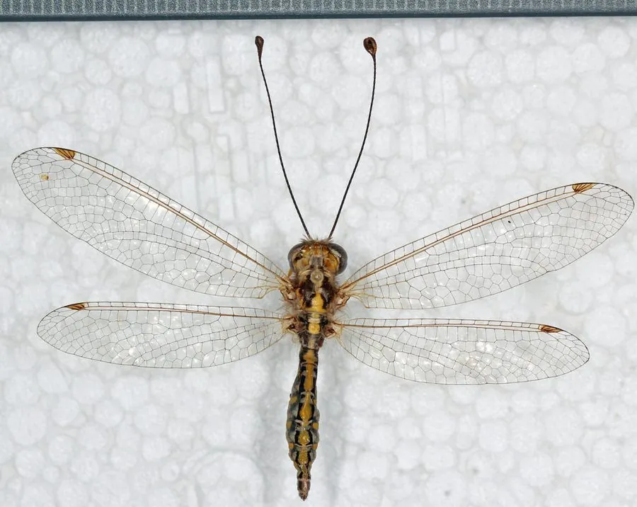

昆虫 · 动物界
蝶角蛉 Ascalaphus kolyvanensis

触角像蝴蝶、长相介于蜻蜓和蝴蝶之间的脉翅目昆虫，常在林缘和草丛上空捕食飞虫，是白天活动的空中猎手。
- 分类
- 门节肢动物门纲昆虫纲目脉翅目科蝶角蛉科属蝶角蛉属
- 栖息环境
- 林缘、灌丛和草地，白天在空中捕食飞虫
- 地理分布
- 东亚地区，中国北方和中部有分布
- 保护级别
- 暂无评估
物种志
蝶角蛉成虫体长 30–40 mm，翅展 60–80 mm，体形似蜻蜓，但触角细长、末端膨大成球，像蝴蝶的触角；翅透明，翅痣明显，停息时翅膀平展。它的复眼很大，占据头部的大部分。
蝶角蛉分布于东亚，中国北方和中部有记录，栖息于林缘、灌丛和草地。它白天活动，飞行迅速，在空中捕食蚊、蝇等小飞虫；成虫的飞行路线飘忽，常在阳光下的开阔地巡飞。幼虫生活在地面的落叶层或土壤中，身体扁平，捕食小型节肢动物，是安静的小猎手。蝶角蛉的成虫停下来时翅膀平铺，容易被误认为蜻蜓。目前它没有IUCN 的正式评估，中国未将其列入国家重点保护野生动物名录。
形态与习性
- 食性成虫在空中捕食蚊、蝇等小飞虫，幼虫捕食土壤中的小型节肢动物
- 体长30–40 mm，翅展 60–80 mm
- 触角细长、末端膨大成球，像蝴蝶的触角
- 活动时间白天活动，飞行迅速
- 幼虫栖息地面落叶层或土壤中
- 栖息地林缘、灌丛和草地
趣味知识
- 蝶角蛉长着像蝴蝶一样的棒状触角，身体却像蜻蜓。
- 它白天在空中捕食飞虫，动作敏捷。
- 蝶角蛉的幼虫生活在落叶层里，是安静的小猎手。